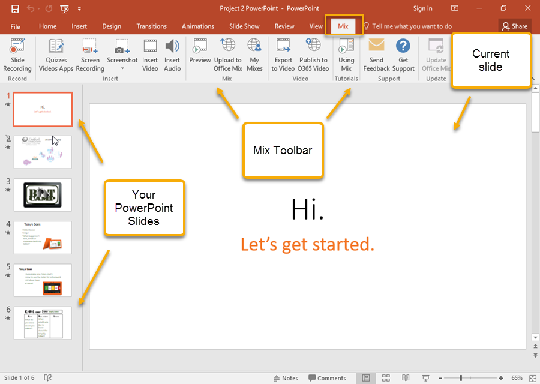

Office Mix appears as a tab in the PowerPoint Ribbon. Open your PowerPoint presentation and then click the Mix tab to access the Office Mix interface.
The interface is comprised of three main areas: the Mix toolbar in the Ribbon, your PowerPoint slides in the left-hand pane, and the current slide appearing in the workspace. The Mix toolbar contains all of the tools you'll need to design and record your mix project.
